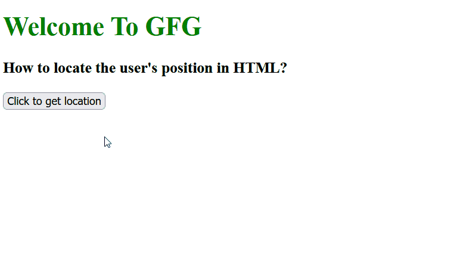

Въведение
Geolocation API е комуникационен интерфейс между клиентско устройство или приложение (от страна на клиента) и приложение или услуга (от страна на сървъра), който идентифицира и връща местоположението на клиента и радиуса на точност въз основа на информация за клетъчни кули и WiFi възли. Изходните параметри могат да включват подробности за валутата, използвана на това място, часовата зона и дори дали страната е членка на ЕС. Извиква се, когато има нужда от програмно конфигуриране на уеб или мобилно приложение въз основа на местоположението на потребителя и често срещаните случаи на използване включват навигация в реално време на картата и геопроследяване, обслужване на контекстни реклами, внедряване на проверки за сигурност на потребителите и приспособяване на съдържание към определени региони.
Как работи Geolocation API?
Geolocation API не съхранява никаква информация в себе си, а по-скоро предоставя възможност за събиране на съществуваща информация от запитаното устройство. Той може да събира информация за местоположението от източници като IP адрес, GPS, WiFi, Bluetooth, RFID, GSM/CDMA ID или потребителски вход. След като заявката за API е завършена, местоположението за „най-добро предположение“ с координати се връща на извикващото приложение в JSON. Комуникацията се извършва през HTTPS с помощта на POST заявка. Заявката и отговорът са форматирани като JSON, а типът на съдържанието и на двете е application/json. Потребителят обаче трябва изрично да разреши на приложението или на бръузъра да използва местоположението му.
Параметри
Входни параметри
Обикновено заявка за информация за местоположение към IP геолокация е от устройство, напр. компютър или мобилен телефон, който предоставя един или повече от следните входни параметри: IP адрес, MAC адрес, RFID, GPS координати, клетъчна кула (например GSM, WCDMA или CDMA) ID или WiFi позиция. Потребителят може също да поиска информация за местоположение за място или организация по име.
Изходни параметри
Geolocation API отправя заявка към Информационният сървър за местоположение (Location information server - LIS), който връща различни свойства за местоположение, включително точността на информацията, на която предава. След това API-то връща тази информация на клиента. Мястото, откъдето API-то получава информация е прозрачно и интерфейсът не запазва никакви данни. Информацията, предоставяна от типичния Geolocation API, варира, но може да включва следното:
- Физически адрес - напр. държава, град, регион, континент, пощенски код, географска ширина и дължина и дали страната е членка на ЕС.
- IP адрес и подробности за ISP - Включително информация за това дали IP е прокси адрес.
- Оператор – име на мобилен оператор, код на региона и код на мрежата.
- Местни данни - Данни за часовата зона (включително лятно часово време), език (включително множество официални езици) и валута (включително символ на валута и описание).
- Информация за заплахата – дали IP адресът е бил източник на злонамерена дейност.
Geolocation API свойства
Всички основни уеб браузъри (Firefox, Chrome, Safari, Opera) поддържат Geolocation API и се използва широко на мобилни устройства като Android, iOS, Windows Phone и Maemo. Geolocation API може да бъде достъпен със свойството Geolocation като част от обекта Navigator. Свойството Geolocation включва набор от три метода, а именно:
- getCurrentPosition() – Методът getCurrentPosition извлича текущото географско местоположение на устройството. Местоположението се изразява като набор от географски координати заедно с информация за посоката и скоростта. Информацията за местоположението се връща в обект Position. Синтаксис на метода: getCurrentPosition(showLocation, ErrorHandler, options); Методът getCurrentPosition не връща стойност.  Фигура 1. Gif визуализация на метода getCurrentPosition()
- showLocation – Това определя метода за обратно извикване, който извлича информацията за местоположението. Този метод се извиква асинхронно с обект, съответстващ на обекта Position, който съхранява върнатата информация за местоположение.
- ErrorHandler – Този незадължителен параметър определя метода за обратно извикване, който се извиква, когато възникне грешка при обработката на асинхронното повикване. Този метод се извиква с обекта PositionError, който съхранява върнатата информация за грешка.
- options – Този незадължителен параметър определя набор от опции за извличане на информация за местоположението. Можете да посочите (а) точност на върнатата информация за местоположението (б) изчакване за извличане на информацията за местоположението и (в) използване на кеширана информация за местоположение.
- Списък с параметри:
function showLocation(position) {
var latitude = position.coords.latitude;
var longitude = position.coords.longitude;
alert("Географска ширина : " + latitude + " Географска дължина: " + longitude);
}
function errorHandler(err) {
if(err.code == 1) {
alert("Error: Access is denied!");
} else if( err.code == 2) {
alert("Error: Position is unavailable!");
}
}
function getLocation() {
if(navigator.geolocation) {
// timeout at 60000 milliseconds (60 seconds)
var options = {timeout:60000};
navigator.geolocation.getCurrentPosition(showLocation, errorHandler, options);
} else {
alert("Sorry, browser does not support geolocation!");
}
}
Код 1: примерен код за метода getCurrentPosition()
var variable1 = document.getElementById("paraID");
//Функцията връща текущата локация
function getlocation() {
navigator.geolocation.watchPosition(showLoc);
}
//Тук се изчислява надморската височина спрямо локацията
function showLoc(pos) {
variable1.innerHTML = "Altitude: " +
pos.coords.altitude;
}
Код 2: примерен код за метода watchPosition()
var id, target, option;
var clearId;
var demoPara = document.getElementById("demo");
var user_loc = navigator.geolocation;
function getPosition() {
if (user_loc) {
var option = { timeout: 50000 }
clearId = user_loc.watchPosition(
currentLoc, resolveError, option);
}
else {
"Your browser doesn't support Geolocation API.";
}
}
function currentLoc(loc) {
var lat = loc.coords.latitude;
var long = loc.coords.longitude;
demoPara.innerHTML = "Географска ширина: "
+ lat + ", Географска дължина: " + long;
}
function resolveError(err) {
demoPara.innerHTML = "ERROR"
+ err.code + ": " + err.message;
}
function clearPosition() {
demoPara.innerHTML = user_loc.clearWatch(clearId);
}
Код 3: примерен код за метода clearWatch()
Потребителски случаи на Geolocation API
От съпоставянето на хора, търсещи романтика единомишленици в техния район, до даването на възможност на бизнеса да проследява своите клиенти, геолокацията се използва предимно за географско персонализиране на цифровото изживяване на потребителя.
- Контекст на браузъра – Когато потребител търси в интернет, браузърът може да поиска неговото местоположение, за да предостави информация, специфична за локала, която е от значение за заявката му, напр. фирми, разположени в неговия район или местни новини.
- Доклади за времето - Ако някой иска да провери времето на телефона си, устройството ще трябва да е с включено местоположението от настройките на телефона.
- Актуализации на социалните медии – Приложения като Facebook използват API за местоположение, така че потребителите да могат да маркират местоположенията си в своите актуализации на състоянието, например, като покажат на приятелите си къде почиват.
- Заетост и бизнес мрежи – Уебсайтовете за търсене на работа използват геолокация, за да съпоставят търсещите работа с възможностите, налични в техния район.
- Цифрови карти - Непрестанно се случва някой да бъде изгубен в определен град. Тогава, за да се определи местоположението и да се намери най-бързият маршрут от т.А до т.Б, се използва помощта на Google Maps.
- Маркетинг и ангажираност с клиенти – уеб приложенията използват Geolocation API, за да наблюдават позицията на потребителя, когато е навън и в града. Например, когато човек ходи да пазарува, приложение може да го предупреди за текущи специални предложения в конкретен магазин или да предложи ресторанти в района въз основа на предварително установените кулинарни предпочитания на потребителя.
- Проследяване на IoT устройства – Устройствата за интелигентен дом или преносимите устройства и превозните средства могат лесно да бъдат проследени или локализирани с геолокация.
- Киберсигурност – Геолокацията може да се използва за проследяване на мрежови нарушители или подозрителни влизания в системата; идентифицират кога и къде се извършват лоши онлайн транзакции; и се открива сенчестата организация зад един IP адрес.